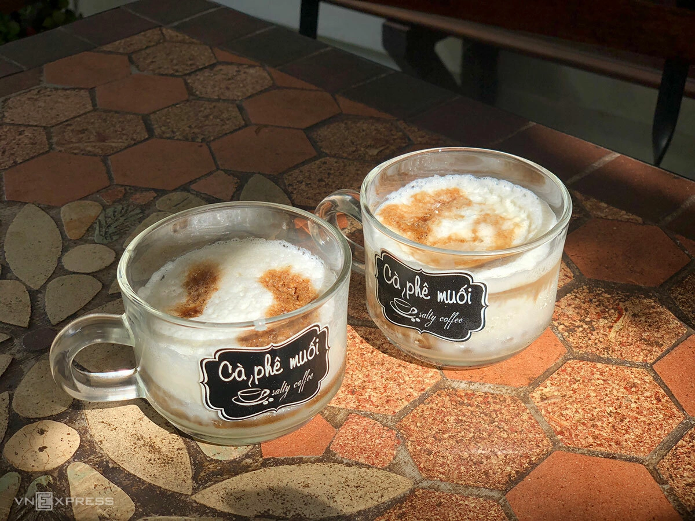

☕ Cà phê muối Huế
💁🏻♀️ Giới thiệu
Huế là nơi khai sinh ra cà phê muối – một biến tấu sáng tạo từ cà phê truyền thống.
Thức uống này gây ấn tượng bởi sự kết hợp lạ mà hài hòa giữa vị đắng của cà phê và vị mặn nhẹ của muối, tạo nên hậu vị béo ngậy, khó quên.
🥣 Nguyên liệu chính
• Cà phê nguyên chất (thường là pha phin)
• Sữa đặc
• Kem tươi
• Muối tinh
🧑🍳 Cách chế biến
• Pha cà phê đậm đặc bằng phin
• Đánh kem tươi cùng sữa và một chút muối
• Rót lớp kem muối lên trên cà phê
• Thưởng thức khi còn ấm để cảm nhận rõ các tầng hương vị
⭐️ Quán cà phê muối ngon tại Huế
📍 Cà phê Muối – 142 Đặng Thái Thân
📍 Tan Cafe – 14 Nguyễn Công Trứ
📍 Laph Cafe – 6/7 Nguyễn Công Trứ
📍 1990 Cafe & More – 35 Nguyễn Tri Phương
📍 Nâu Coffee – 13 Nguyễn Thái Học